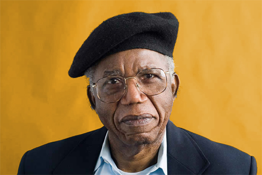

Chinua Achebe

Novels
Things Fall Apart (1958)
No Longer at Ease (1960)
Arrow of God (1964)
A Man of the People (1966)
Anthills of the Savannah (1987)
Short Story Collections
Girls at War and Other Stories (1972)
African Short Stories (1985, co-edited with C.L. Innes)
Essays & Non-fiction
Morning Yet on Creation Day: Essays (1975)
Hopes and Impediments: Selected Essays (1988)
Home and Exile (2000)
The Education of a British-Protected Child (2009)
There Was a Country: A Personal History of Biafra (2012)
Poetry
Beware, Soul Brother and Other Poems (1971)
Children's Books
Chike and the River (1966)
How the Leopard Got His Claws (1972, co-authored with John Iroaganachi)
The Flute (1975)
The Drum (1978)